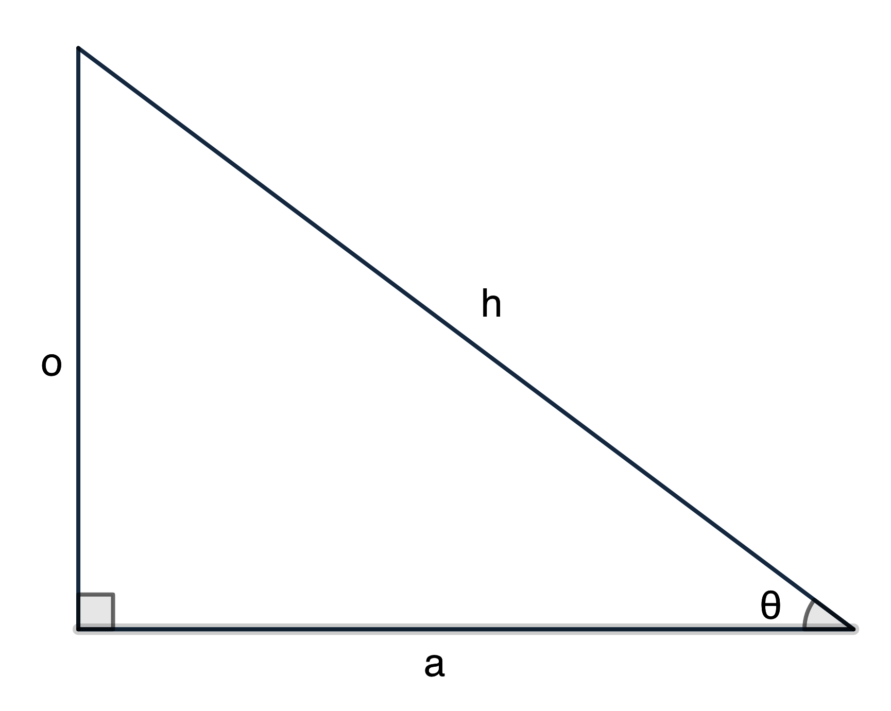
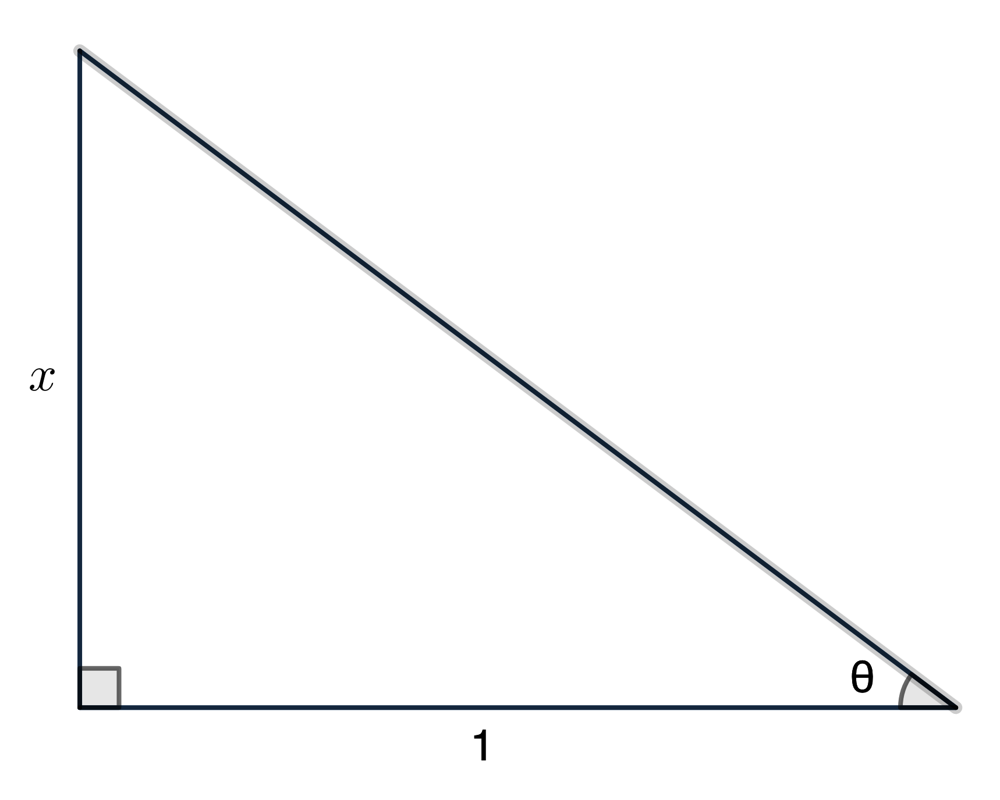
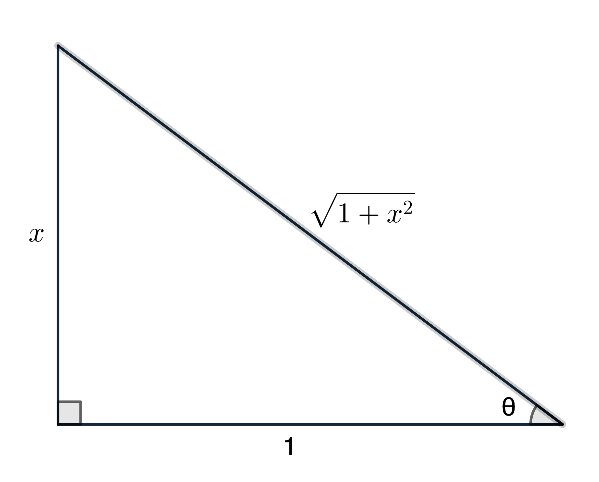
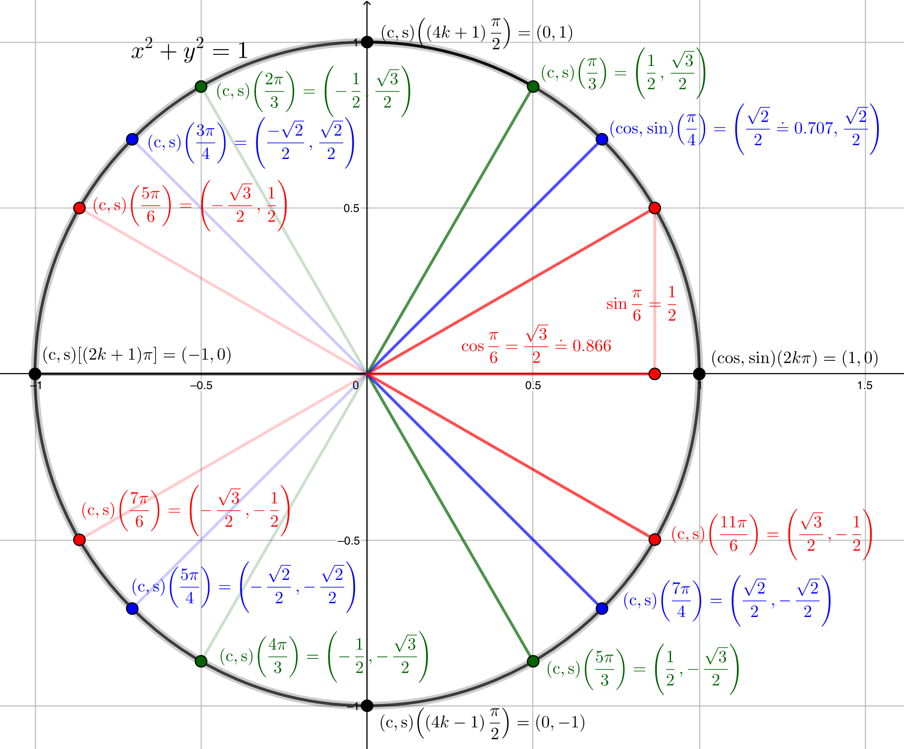
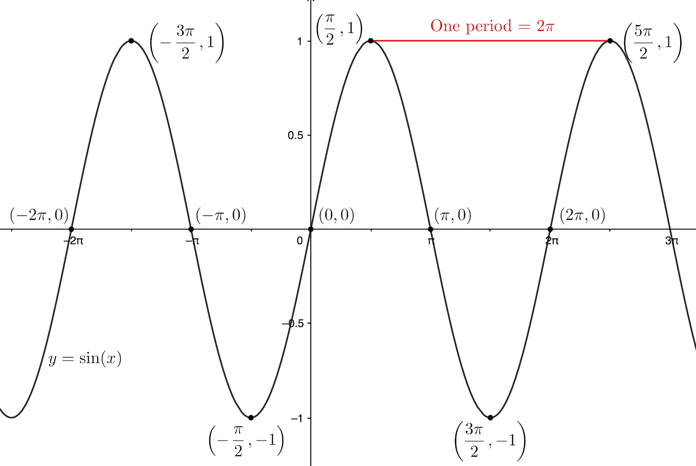
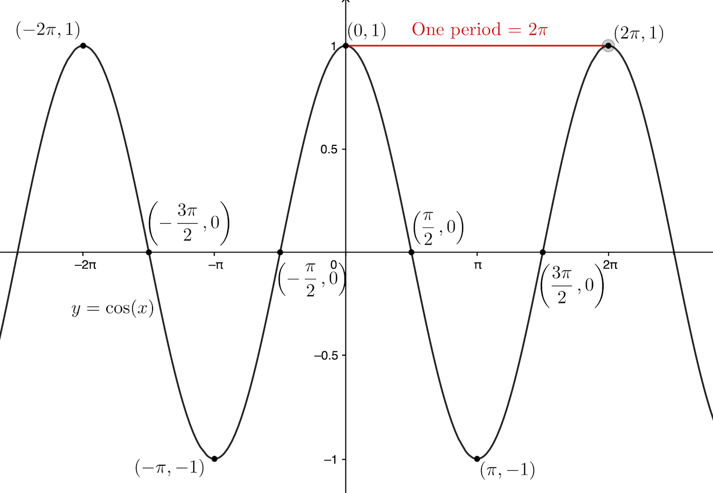
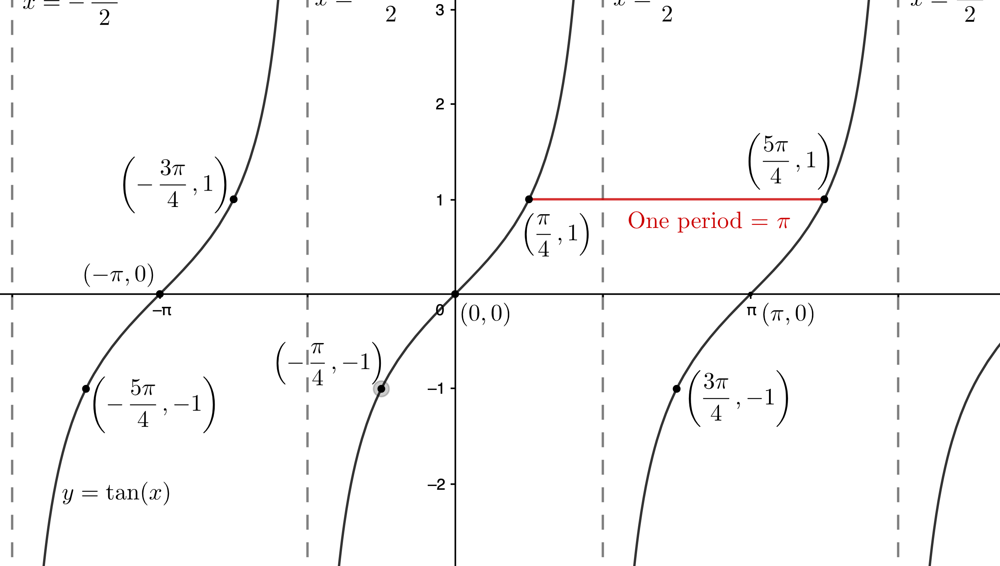
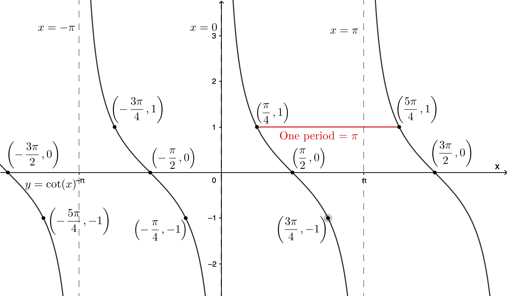
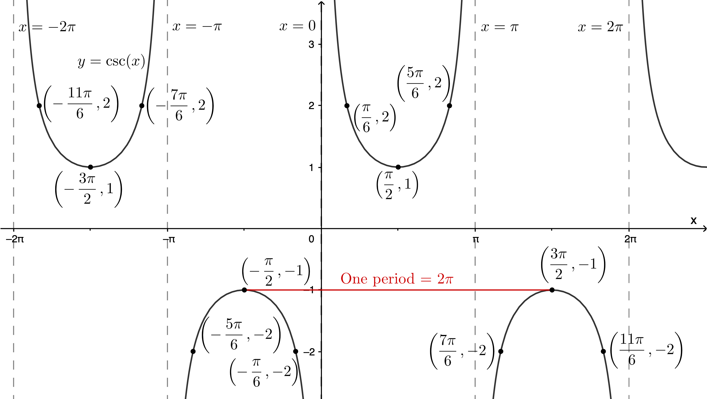
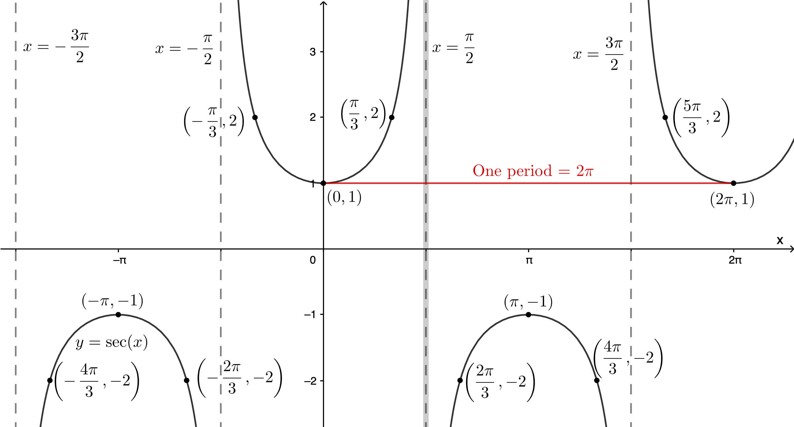

\(\definecolor{red}{RGB}{255,0,0} \definecolor{orange}{RGB}{245, 165, 0} \definecolor{yellow}{RGB}{255,215,0} \definecolor{green}{RGB}{0,255,0} \definecolor{indigo}{RGB}{0,0,255} \definecolor{violet}{RGB}{138,43,226} \definecolor{black}{RGB}{0,0,0} \require{cancel}\)
Notes: These solutions are provided "as-is," for informational purposes only, with no warranty of any kind, expressed or implied, including that of correctness, adequacy, and/or suitability for any purpose, whatsoever. Corrections are welcome and should be emailed to selectedsolutionsdotnet@gmail.com.
Purple font indicates clicking on the text will return you to your prior place.
I "box" answers, but I can’t get ° for degrees to appear properly-sized in boxes, so in answers I spell it out instead of using the symbol.
In tutoring trigonometry (all math really, but especially trigonometry) I am often asked something like "How do you remember all these formulas/identities?" I always answer: "I don’t, I remember where to look them up" (which, in 2026, is ridiculously easy to do on the internet: just type "trig identities" into any browser and the default search engine will, in a matter of microseconds—indeed, before you even finish typing it in!—return umpteen lists of trig identities). However, remembering them, especially when you’re just learning them, isn’t really the issue; the issue is proper use of them: the whole point of the trig identities, etc., is to reduce complicated‑looking problems to simpler problems, in a—quite literally—formulaic way. The issue is how to use the formulas to "plug-and-chug," and a big stumbling block toward that goal is recognizing which formulas/identities are applicable in a particular situation. This is exacerbated by the plethora of new formulas being thrown at you in rapid succession.
The strategy I recommend for dealing with this problem, as tedious as it sounds, is this: at the top of each page of work, begin by re‑copying all the formulas/identities you are responsible for learning in that lesson (at the very least: the more you write out, the more you will retain what you’ve taken the time to write out, so by all means, write out identities from earlier lessons as well, especially if you find that you’re still struggling with recognizing them in problems you’re working on; for what it’s worth here, I also emphasize this strategy when learning the properties of exponents and logarithmic identities—basically, any situation in which you’re being required to learn a lot of new synoptic information in a short period of time). To set the example and make abundantly clear what I mean, I will begin each section below with a re‑statement of the formulas/identities being "drilled" in that section (as well as re‑statement of the specific formulas/identities being used in each particular exercise). By doing so, I hope to drive home to the student that the way to "memorize" this material is by written repetition (even if it sometimes seems excessive).
To convert the decimal portion of degrees to minutes and seconds: Multiply the decimal (fractional) part by 60: the integer (non-fractional) part of the result is the number of minutes; then multiply the fractional part of that result by 60: the result, including any remaining decimal fractional part, is the number of seconds; Example: \(0.0853\)° \(\times~(60’~/~1\)°\()~=5.118’,~0.118’ \times (60’’ / 1’) = 7.08’’\), so \(0.0853\)° \(= 0\)°\(~5’~7.08’’\).
To convert from degrees, minutes, seconds to decimal degrees: divide the number of minutes by 60; add the number of seconds divided by 3600; then add that sum to the number of degrees; Example: \(23\)°\(~34’~23.45’’ = 23\)° \(+~34’ \times (1\)°\(/60’) + 23.45’’ \times (1\)°\(/3600’’) \doteq 23\)°\( + 0.5666667\)°\( + 0.00651389\)°\( ~\doteq 23.573181\)°. Also: 1 circle = 360°, so 1° = \(\displaystyle \frac1{360}\)‑th of a circle, 1 straight angle = half a circle = 180°, 1 right angle = one-fourth of a circle = 90°.
Radians: radians measure angles as "fractions of a circle," using the number of radii (plural of radius) required to "measure" the circular arc "spanned" by the angle: arc length \(s= r\theta\), where \(r\) is the radius of the circle and \(\theta\) (the Greek letter theta, pronounced thay-ta) is the "subtended" angle, measured in radians; in particular, if \(r=1\), then arc length and radian angle measure are one and the same. (The consequences of this are why radians are the preferred angle measure in mathematics, most of physics, and theoretical engineering). To convert from decimal degrees to radians: multiply by \((\pi\) rad/\(180\)°\()\); Example: \(74.248\)° \(\times~(\pi\) rad\(/180\)°\()~\doteq 1.295872\) rad (to convert from ° ' '' to rad, it’s easiest to first convert to decimal degrees). To convert from radians to degrees: multiply by \((180\)°\(/\pi\) rad\()\); Example: \(1.57079633\) rad \(\times~(180\)°\(/\pi\) rad \(\doteq 90.00000018\)°. (However, we will typically express radian angle measure as a multiple of \(\pi\), e.g., \(2\pi\) rad = a whole circle, \(\pi\) rad = a straight angle, \(\frac{\pi}2\) rad = a right angle, etc., providing a decimal approximation only when necessary/requested.)
Area of a "sector" of a circle of radius \(r\) spanned by angle \(\theta\): \[A = \frac12r^2\theta\] where \(\theta\) must be in radians.
Special Angles: For triangle trigonometry, the most important special angles are:
| Degrees | 0 | 30 | 45 | 60 | 90 | 120 | 135 | 150 | 180 |
|---|---|---|---|---|---|---|---|---|---|
| Radians | 0 | π/6 | π/4 | π/3 | π/2 | 2π/3 | 3π/4 | 5π/6 | π |
We will defer the rest till Section 4.
Revolutions (revs; also called cycles): especially used in physics and engineering, one rev equals one one full circle, giving the conversion factors \((360\)°\( / 1 \text{ rev}) = (2\pi\text{ rad}/1\text{ rev})\); Conversion examples: 0.25 rev \(\times~(360\)°\(/1\text{ rev}) = 90\)°; \(\displaystyle\frac{2\pi}3\text{ rad}~\times \frac{1\text{ cycle}}{2\pi\text{ rad}} = \frac13\text{ cycle}\).
Constant (or average) speed around a circle: for a circle of radius \(r\), "linear" speed \(v = \displaystyle \frac s t\), where \(s = r\theta\) is the length-of-arc traveled in time \(t\) (\(\theta\) must be in radians); "angular" speed \(\omega\) (the Greek letter "omega," pronounced oh-may-guh) \(=\displaystyle \frac{\theta}{t}\), where \(\theta\) need not be in radians (it is common to use revs, e.g., revolutions per minute (rpm) or cycles, e.g., cycles per second (Hz) in physics, for example); note that \(\omega\) doesn’t depend on \(r\). Combining \(\displaystyle v = \frac{r\theta}t\) and \(\displaystyle \omega = \frac{\theta}t\) we get \[\boxed{v = r\omega \iff \omega = \displaystyle \frac{v}{r}}\] but in this form, \(\omega\) does need to be/will end up in units of radians (per unit time). Example: an object experiencing "uniform" (i.e., constant speed) motion around a circle of radius 12,900 kilometers with a linear speed of \(1075\pi \doteq\) 3377 kilometers per hour, has an angular speed \(\omega = \displaystyle \frac{1075\pi\text{ kph}}{12,900\text{ km}} = \frac{\pi}{12}\frac{\text{radians}}{\text{hour}} \times \frac{1\text{ rev}}{2\pi\text{ rads}} = \frac{1\text{ rev}}{24\text{ hrs}} = 1\) revolution per (Earth) day.
Solved Problems
1.28) Convert \(98\)°\(22’45’’\) to decimal degrees, rounded to two decimal places.
Sln: \(98\)°\(22’45’’\) = \(98\)° \(+~22’ \times (1\)°\(/60’) + 45’’ \times (1\)°\(/3600’’) =
(98 + 11/30 + 1/80)\)° \(\doteq \boxed{98.38\text{ degrees.}}\)
1.32) Convert \(29.411\)° to degree minute seconds, rounded to the nearest second.
Sln: \(0.411\)° \(\times~(60’/1\)°\()~= 24.66’, 0.66’ \times (60’’/1’) = 39.6’’\) so, to the nearest second, \(29.411\)° \( = \boxed{29\text{ degrees }24’~40’’.}\)
1.38) Convert \(330\)° to radians, expressing the result as a multiple of \(\pi\).
Sln: \(330\)° \(\times~\pi\) rad \(/~180\)° \(= \boxed{\frac{11\pi}6\text{ rad.}}\)
1.44) Convert \(-225\)° to radians, expressing the result as a multiple of \(\pi\).
Sln: \(225 / 180 = 5/4\) so \(-225\)° \(= \boxed{-\frac{5\pi}4\text{ rad.}}\)
1.50) Convert \(\displaystyle -\frac{2\pi}{3}\) radians to degrees.
Sln: \(\displaystyle -\frac{2\cancel{\pi}}{3}\cancel{\text{rad}} \times (180\)°\(~/ \cancel{\pi}\cancel{\text{rad}}) = \boxed{-120\text{ degrees.}}\)
1.54) Convert \(\displaystyle \frac{5\pi}{12}\) radians to degrees.
Sln: \(\displaystyle \frac{5\cancel{\pi}}{12}\cancel{\text{rad}} \times (180\)°\()~/(\cancel{\pi}\cancel{\text{rad}}) = \boxed{75\text{ degrees.}}\)
1.62) Convert \(-51\)° to decimal radians, rounded to two decimal places.
Sln: \(-51\)° \(\times~(\pi\text{ rad}) / (180\)°\()~=\displaystyle -\frac{51\pi}{180}\text{ rad} \doteq \boxed{0.89\text{ rad.}}\)
1.70) Convert \(\sqrt{2}\) radians to decimal degrees, rounded to two decimal places.
Sln: \(\sqrt2\cancel{\text{rad}} \times (180\)°\()~/(\pi\cancel{\text{rad}}) = (180\sqrt2/\pi)\)° \(\doteq \boxed{81.03\text{ degrees.}}\)
1.74) \(\displaystyle \frac14\) radian corresponds to a circular arc length of 6 centimeters: what is the radius of the circle?
Sln: \(s = r\theta, \theta\) in radians. We have \(s = 6\) cm, \(\theta = 0.25\) rad, so \(6 = 0.25r \implies r = \boxed{24\text{ cm.}}\)
1.78) What is the arc length corresponding to an angle of 120° in a circle of radius 3 meters?
Sln: Method 1: \(s=r\theta,\theta\) in radians, so \(s = \displaystyle \frac{3\text{ m}}{1\cancel{\text{rad}}} \times \left(120\cancel{\text{degrees}} \times \frac{\pi\cancel{\text{ rad}}}{180\cancel{\text{degrees}}}\right) = 2\pi\text{ m} \doteq \boxed{6.28\text{ m.}}\)
Method 2: \(120\)° \(= 1/3\) of a full circle, so \(s = \frac13(2\pi)(3\text{ m}) =\boxed{2\pi\text{ m.}}\)
1.82) \(\displaystyle \frac14\) radian corresponds to a circular sector area of 6 square centimeters: what is the radius of the circle?
Sln: \(A = \frac12r^2\theta, \theta\) in radians. We have \(A = 6\) cm\(^2, \theta = 0.25\) rad, so \(6 = \frac18 r^2 \implies r = \boxed{\sqrt{48} \doteq 6.93\text{ cm.}}\)
1.86) What is the sector area corresponding to an angle of 120° in a circle of radius 3 meters?
Sln: As with Exercise 1.78, we can either first convert \(\theta\) to radians, or we can recognize that 120° is one‑third of a full circle, and thus the area must be \(\frac13 \pi (3\text{ m})^2 = \boxed{3\pi \doteq 9.42\text{ m}^2.}\)
1.90) To three decimal places, what is the arc length and sector area for an angle of 50° in a circle of radius 9 centimeters?
Sln: Whenever a portion of a circle is given in degrees and we need to find arc length and/or area, I prefer to figure it out as the fraction of the whole circle times the circle’s whole circumference and/or area: 50° = 50/360 = 5/36‑ths of a whole circle, and for a whole circle of radius 9 cm, the circumference is 18\(\pi\) cm and the area is 81\(\pi\) cm\(^2\), so the required arc length is \((5/36)(18\pi) = \boxed{2.5\pi \doteq 7.854 \text{ cm}}\) and the required area is \((5/36)(81\pi) = \boxed{11.25\pi \doteq 35.343\text{ cm}^2.}\)
1.96) Through what angle should a sprinkler rotate to cover a circular sector of radius 15 yards and area 100 square yards?
Sln: \(A = \frac12 r^2 \theta, \theta\) in radians, so: \(100\text{ yd}^2 = \frac12 (15\text{ yd})^2 \theta \implies \theta = \displaystyle \frac{200}{225} = \boxed{\frac89 \text{ rad}} \times \frac{180\text{ degrees}}{\pi \text{ rad}} = \boxed{\frac{160}{\pi} \doteq 50.9\text{ degrees.}}\)
1.100) The wheels of a car have a radius of 15 inches and are turning at a rate of 3 revolutions per second: in inches per second and miles per hour, how fast is the car moving?
Sln: \(\displaystyle 3 \frac{\cancel{\text{rev}}}{\text{sec}} \times 2\pi(15)\frac{\text{ in}}{\cancel{\text{rev}}} = \boxed{90\pi \doteq 282.7\text{ ips.}}\) \(\displaystyle 90\pi \frac{\cancel{\text{in}}}{\cancel{\text{sec}}} \times \frac{1 \text{ mi}}{(12)(5280)\cancel{\text{in}}} \times \frac{3600 \cancel{\text{sec}}}{1 \text{ hr}} = \boxed{\frac{225}{44}\pi \doteq 16.06\text{ mph.}}\)
1.104) At 40° latitude, the distance from a point on the surface of the Earth to its axis of rotation is approximately 3033.5 miles: what is the linear speed of such a point?
Sln: \(v = \omega r, \omega\) in radians per unit time; \(r = 3033.5\text{ mi}, \omega = \displaystyle \frac{1\cancel{\text{rev}}}{24\text{ hrs}} \times \frac{2\pi\text{ rad}}{1\cancel{\text{rev}}} \implies v = \frac{3033.5\pi\text{ mi}}{12\text{ hr}} \doteq \boxed{794.2\text{ mph.}}\)
1.108) A Ferris wheel has a radius of 30 feet and takes 70 seconds to complete one revolution: what is the linear speed, in feet per second, of a point on the circumference of the wheel, and what is its angular speed in radians per second?
Sln: \(1\) rev per \(70\) seconds is an angular speed, so the second part is simply a unit conversion: \(\displaystyle\frac{1\cancel{\text{rev}}}{70\text{ sec}} \times \frac{2\pi\text{ rad}}{1\cancel{\text{rev}}} = \boxed{\frac{\pi}{35}\frac{\text{rad}}{\text{sec}} \doteq 0.090 \frac{\text{rad}}{\text{sec}}}\). With \(\omega\) in rad/sec, the linear speed of a point on the circumference is simply \(v = \omega r = \displaystyle \frac{\pi}{35}\frac{\cancel{\text{rad}}}{\text{sec}}\left(30 \frac{\text{ft}}{\cancel{\text{rad}}}\right) = \boxed{\frac{6\pi}{7}\frac{\text{ft}}{\text{sec}} \doteq 2.69 \frac{\text{ft}}{\text{sec}}}\). Check: One revolution \(=2\pi(30\text{ ft}) = 60\pi\text{ ft}\), completed in \(70\) seconds, so the linear speed must be \(\displaystyle \frac{60\pi\text{ ft}}{70\text{ sec}} = \frac{6\pi}{7}\frac{\text{ft}}{\text{sec}}~\checkmark.\)
1.112) How much earlier does a person in Ft. Lauderdale, FL see the sun rise than a person in Naples, Fl? Relevant data: Naples is 90 miles due west of Ft. Lauderdale (measured along the surface of the Earth), both are 3559 miles from the Earth’s axis of rotation, and the Earth completes one revolution per 24 hours.
Sln: \(\theta = \omega t \implies t = \displaystyle \frac{\theta}{\omega}\), where \(\theta\) and \(\omega\) have to have the same unit of angle measure; \(\theta = 90\cancel{\text{mi}} \times \displaystyle \frac{1\text{ rad}}{3559\cancel{\text{mi}}}, \omega = \frac{2\pi\text{ rad}}{24\text{ hrs}} \implies t = \frac{(90)(12)}{3559\pi} \doteq \boxed{0.0966\text{ hrs} = 5.80\text{ min}}\) earlier.
1.116) Determine: a) the (circular) outfield fence length; and b) the area of a 10 ft wide warning track; for a baseball field such that: the fence is everywhere 200 ft distant from home plate; and its extreme ends subtend an angle with home plate of 96° (see illustration in text).
Sln: a: The length of the outfield fence is the arc-length of that portion of a circle of radius 200 ft subtended by an angle of 96°. There are two ways to proceed: we can use the formula \(s=r\theta\), which requires that we convert the angle of 96° to radian measure—that way is left to the reader. I wish to emphasize the way that takes advantage of recognition that the arc is simply a fraction of the whole circle; what fraction? Well, the angle is 96° and a whole circle is 360°, so the arc is 96°/360° \(= \frac4{15}\)-ths of a whole circle of radius 200 ft. The circumference of such a circle is \((2\pi)200 = 400\pi \doteq 1,257\) ft, so the length of the fence is \(\displaystyle \frac4{15}(400\pi) = \boxed{\frac{1600\pi}{15} \doteq 335\text{ ft.}}\)
b) Determining the area of the warning track is just slightly more complicated. To get it, we must, in principle, calculate two circular sector areas—that bounded by the fence \(= \displaystyle \frac12(r_{\text{to fence}})^2\theta\); and that bounded by the infield‑side of the warning track \(= \displaystyle \frac12(r_{\text{to track}})^2\theta\) (with \(\theta\) in radians and, in this situation, the same for both sectors)—and subtract the latter from the former. Now, if we write that out:\[A_{\text{track}} = A_{\text{to fence}} - A_{\text{to track}} = \frac12(r_{\text{to fence}})^2\theta - \frac12(r_{\text{to track}})^2\theta\]since \(\theta\) is the same in both terms, we can factor out \(\frac12\theta\), so that the area we need can be calculated simply as:\(\displaystyle\frac12\theta(r_{\text{to fence}}^2 - r_{\text{to track}}^2) = \frac12[96\)°\(\times (\pi\) rad\(/180\)°\()](200^2-190^2) = \frac4{15}\pi(200-190)(200+190) = 4\pi\frac{10}{15}(390) = 8\pi(130) = \boxed{1040\pi \doteq 3267\text{ ft}^2.}\)
Restatement of basic facts
For a right triangle labeled as shown:

\(\text{sine}(\theta) = \sin \theta = \displaystyle \frac{\text{"opposite"}}{\text{"hypotenuse"}} = \frac{o}{h};~\text{cosine}(\theta) = \cos\theta = \frac{\text{"adjacent"}}{\text{hypotenuse}} = \frac{a}{h};~\text{tangent}(\theta) = \tan\theta = \frac{\text{opposite}}{\text{adjacent}} = \frac{o}{a};\\ \text{cotangent}(\theta) = \cot\theta = \displaystyle\frac{\text{adjacent}}{\text{opposite}} = \frac{a}{o};~\text{secant}(\theta) = \sec\theta = \frac{\text{hypotenuse}}{\text{adjacent}} = \frac{h}{a};~\text{cosecant}(\theta) = \csc\theta = \frac{\text{hypotenuse}}{\text{opposite}} = \frac{h}{o}\)
The Fundamental Identities
Quotient Identities: \(~~~~~~~~~~~~~~~~~~~~~\displaystyle \tan\theta = \frac{\sin\theta}{\cos\theta},~\cot\theta = \frac{\cos\theta}{\sin\theta}\)
Reciprocal Identities: \(~~~~~~~~~~~~~~~~~~\displaystyle \csc\theta = \frac1{\sin\theta},~\sec\theta = \frac1{\cos\theta},~\cot\theta=\frac1{\tan\theta}\)
Pythagorean Identities: \(~~~~~~~~~~~~~~~\sin^2\theta + \cos^2\theta = 1,~\tan^2\theta + 1 = \sec^2\theta,~\cot^2\theta + 1 = \csc^2\theta\)
Cofunction Identities: if \(x+y = 90\)° \(= \frac{\pi}2\) rad, i.e., if \(x,y\) are "complementary," then: \[\sin x = \cos y,~\tan x = \cot y,~\sec x = \csc y\]
Equivalently: \(\displaystyle \sin\left(\frac{\pi}2-\theta\right) = \cos \theta,~\tan\left(\frac{\pi}2-\theta\right) = \cot \theta,~\sec\left(\frac{\pi}2-\theta\right) = \csc \theta,\\ \displaystyle \cos\left(\frac{\pi}2-\theta\right) = \sin\theta,~\cot\left(\frac{\pi}2-\theta\right) = \tan\theta,~\csc\left(\frac{\pi}2-\theta\right) = \sec\theta\)
Solved Problems
2.20) Given: A right triangle with one leg \(= 2\) units, hypotenuse \(= \sqrt5\) units, and angle between them \(= \theta\); Calculate: \(\sin, \cos, \tan, \cot, \sec, \& \csc\) of \(\theta\).
Sln: \(2\) is the length of the adjacent leg, and the Pythagorean Theorem tells us the length of the opposite leg must equal \(\sqrt{(\sqrt5)^2 - 2^2} = \sqrt{5-4} = 1\), so: \[\boxed{\sin\theta = \frac1{\sqrt5} = \frac{\sqrt5}{5}; \cos\theta = \frac2{\sqrt5} = \frac{2\sqrt5}{5}; \tan\theta = \frac12; \cot\theta = 2; \sec\theta = \frac{\sqrt5}2; \csc\theta = \sqrt5}.\]
2.24) Given: \(\displaystyle \sin\theta = \frac13, \cos\theta = \frac{2\sqrt2}3\); Use trig identities to calculate \(\tan, \cot, \sec, \& \csc\) of \(\theta\).
Sln: \(\tan\theta = \displaystyle \frac{\sin\theta}{\cos\theta} = \frac{(1/3)}{(2\sqrt2/3)} = \boxed{\frac{1}{2\sqrt2} = \frac{\sqrt2}{4}}\); \(\cot\theta = \displaystyle \frac1{\tan\theta} = \boxed{2\sqrt2}\); \(\sec\theta = \displaystyle \frac1{\cos\theta} = \boxed{\frac3{2\sqrt2} = \frac{3\sqrt2}4}\); \(\csc\theta = \displaystyle \frac1{\sin\theta} = \boxed{3}.\)
28, 32, 36) Use definitions or identities to find the values of the remaining five trig functions of acute angle \(\theta\).
2.28) \(\displaystyle \sin\theta = \frac{\sqrt3}4\).
Sln: Method 1: Using the (ratio) definitions. Due to the "Angle-Angle" theorem of geometry—if two pairs of corresponding angles in two different triangles are congruent, then the triangles are similar—we are free to use any right triangle whose ratio of leg opposite \(\theta\), \(o\), to its hypotenuse, \(h\), is \(\displaystyle \frac{\sqrt3}4\); for example, a right triangle with \(h=4\) and \(o=\sqrt3\) (we could have used a triangle with \(h=1\) and \(o=\frac{\sqrt3}{4}\); or a triangle with \(h=1000\) and \(o=250\sqrt3\); etc., but we may and do choose the triangle which makes the rest of values "easiest" to calculate). In order to use the definitions, we need the length of the adjacent leg, \(a\), for which we use the Pythagorean Theorem: \(a^2 + (\sqrt3)^2 = 4^2 \implies a^2 = 16 - 3 \implies a = \sqrt{13}.\) Therefore, \[\boxed{\cos\theta = \frac{\sqrt{13}}4; \tan\theta = \frac{\sqrt3}{\sqrt{13}} = \frac{\sqrt{39}}{13}; \cot\theta = \frac{\sqrt{13}}{\sqrt3} = \frac{\sqrt{39}}{3}; \sec\theta = \frac4{\sqrt{13}} = \frac{4\sqrt{13}}{13}; \csc\theta = \frac4{\sqrt3} = \frac{4\sqrt3}3}.\]
Method 2: Using trig identities.
\(\sin^2\theta + \cos^2\theta = 1 \implies \cos^2\theta = 1 - \displaystyle \left(\frac{\sqrt3}{4}\right)^2 = \frac{13}{16} \implies \boxed{\cos\theta = \frac{\sqrt{13}}{4}}\)
\(\displaystyle \sec\theta = \frac1{\cos\theta} \implies \boxed{\sec\theta = \frac4{\sqrt{13}}}\)
\(\displaystyle \tan^2\theta + 1 = \sec^2\theta \implies \tan^2\theta = \frac{16}{13}-1 = \frac3{13} \implies \boxed{\tan\theta = \sqrt{\frac3{13}}}\)
\(\displaystyle \cot\theta = \frac1{\tan\theta} \implies \boxed{\cot\theta = \sqrt{\frac{13}3}}\)
\(\displaystyle \cot^2\theta + 1 = \csc^2\theta \implies \csc^2\theta = \frac{13}3 + 1 = \frac{16}3 \implies \boxed{\csc\theta = \frac4{\sqrt3}}\)
2.32) \(\displaystyle \csc\theta = 5\).
Sln: \(\csc\theta = 5\) implies there exists a right triangle with hypotenuse \(h=5\) and leg opposite \(\theta\) \(o=1\); the Pythagorean Theorem implies the leg adjacent to \(\theta\) \(a=\sqrt{25-1} = \sqrt{24} = 2\sqrt6\), so:
\[\boxed{\sin\theta = \frac15; \cos\theta = \frac{2\sqrt6}5; \tan\theta = \frac1{2\sqrt6} = \frac{\sqrt6}{12}; \cot\theta = 2\sqrt6; \sec\theta = \frac5{2\sqrt6} = \frac{5\sqrt6}{12}}.\]
2.36) \(\displaystyle \cot\theta = 2\).
Sln: \(\displaystyle \tan\theta = \frac1{\cot\theta} \implies \boxed{\tan\theta = \frac12}\)
\(\cot^2\theta + 1 = \csc^2\theta \implies \boxed{\csc\theta} = \sqrt{2^2 + 1} = \boxed{\sqrt5}\)
\(\displaystyle \sin\theta = \frac1{\csc\theta} \implies \boxed{\sin\theta = \frac1{\sqrt5} = \frac{\sqrt5}5}\)
\(\displaystyle \tan^2\theta + 1 = \sec^2\theta \implies \boxed{\sec\theta} = \sqrt{\left(\frac12\right)^2 + 1} = \boxed{\frac{\sqrt5}2}\)
\(\displaystyle \cos\theta = \frac1{\sec\theta} \implies \boxed{\cos\theta} = \frac2{\sqrt5} = \boxed{\frac{2\sqrt5}5}.\)
2.52) Using the Fundamental Identities and/or the Complementary Angle Theorem, find the exact value of \(\cot 25\)°\(\cdot \csc 65\)°\(\cdot \sin 25\)°, without using a a calculator.
Sln: \(\cot 25\)°\(\cdot \csc 65\)°\(\cdot \sin 25\)° \(= (\cos 25\)°\(/\cancel{\sin 25}\)°\() \cdot (1/\sin 65\)°\()\cdot \cancel{\sin 25}\)° \( = (\cos 25\)°\() \cdot (1/\sin(90\)°\(-25\)°\()) = \cancel{\cos 25}\)°\( \cdot (1/\cancel{\cos 25}\)°\() = \boxed{1}.\)
2.58) Given \(\sec \theta = 3\), use trig identities to find the exact values of \(\cos\theta, \tan^2\theta, \csc(90\)°\(-\theta)\), and \(\sin^2\theta\).
Sln: \(\sec\theta = \displaystyle \frac1{\cos\theta} \implies \cos\theta = \frac1{\sec\theta}\) so \(\sec\theta = 3 \implies \boxed{\cos\theta = \frac13}.\)
\(\tan^2\theta + 1 = \sec^2\theta \implies \tan^2\theta = \sec^2\theta - 1\) so \(\sec\theta = 3 \implies \boxed{\tan^2\theta} = 9-1 = \boxed{8}.\)
\(\csc(90\)°\(-\theta) = \sec\theta\) so \(\sec\theta = 3 \implies \csc(90\)°\(-\theta) = \boxed{3}.\)
\(\sin^2\theta + \cos^2\theta = 1 \implies \sin^2\theta = 1 - \cos^2\theta = 1 - \displaystyle \left(\frac1{\sec\theta}\right)^2\) so \(\sec\theta = 3 \implies \boxed{\sin^2\theta} = 1 - \displaystyle \frac1{3^2} = \boxed{\frac89}.\)
2.66) Find an acute angle \(\theta\) that satisfies the equation \(\tan\theta = \cot(\theta + 45\)°\()\).
Sln: We use the co-function identity \(\tan\theta = \cot(90\)°\(-\theta)\) to write our equation as \(\cot(90\)°\(-\theta) = \cot(\theta + 45\)°\()\). Now, this is why the problem statement specifies "find an acute angle": when we (soon) expand the definitions of the trigonometric functions to encompass all real numbers, not just angles possible in right triangles, we won’t be able to the following (we’ll learn why when the time comes); however, as long as \(0\)°\( \lt \theta \lt 90\)°, \(\cot \alpha = \cot \beta \iff \alpha = \beta\), so \(\cot(90\)°\(-\theta) = \cot(\theta + 45\)°\() \implies 90\)°\(- \theta = \theta + 45\)° \(\implies 2\theta = (90-45)\)°\( \implies \boxed{\theta = 22.5\text{ degrees}.}\)
2.73) Refer to the diagram in the text accompanying the Exercise. Let \(n \in \mathbb{R} \ge1\) and \(\theta\) (measured in radians) be such that \(0 \lt n\theta \lt \displaystyle \frac{\pi}{2}\): a) explain why there exists a triangle with angles \(\theta, n\theta\) and included side of length \(1\). Place this triangle in the origin‑centered circle of radius 1 such that the end points of the unit‑length side are at \((0,0) = O\) and \((1,0) = B\); drop the perpendicular from the other vertex, \(C\), to the \(x\)-axis and denote its intersection with the \(x\)-axis by \(D\): b) show that the \(x\)-coordinate of \(D\) equals \[\frac{\tan(n\theta)}{\tan\theta + \tan(n\theta)}.\]
Sln: a) Working in radians, if \(0 \lt n\theta \lt \displaystyle \frac{\pi}{2}\) with \(n \ge 1\), then \(0 \lt \theta \lt \displaystyle \frac{\pi}{2n} \le \frac{\pi}2\) (this last inequality holding because of the assumption that \(n \ge 1\)) so \(0 \lt (\theta + n\theta) \lt \displaystyle \left(\frac{\pi}2 + \frac{\pi}2\right) = \pi\), i.e., the sum of \(\theta\) and \(n\theta\) is less than \(\pi\) (and greater than zero). Thus there is "enough room" for a third angle of a triangle, namely one of measure \(\pi - \theta - n\theta\), which is also greater than zero and less than \(\pi\). From geometry we (should) know that just knowing the angles of a triangle does not determine its size: there are an infinite number of triangles with any "triple" of three angles adding up to \(\pi\) radians. By the AA theorem (see Exercise 2.28, Solution 1 above), all these triangles are similar to one another, so any one we choose, we can simply divide all the sides by the length of the side adjacent to both \(\theta\) and \(n\theta\) to get the triangle with those three angles and that "included" side having length 1.
b) Referencing the figure in the text: since \(\overline{CD}\) is perpendicular to the \(x\)-axis, \(\Delta ODC\) and \(\Delta BDC\) are right triangles, so \(\tan\theta = \displaystyle \frac{h}{x}\) and \(\tan(n\theta) = \displaystyle \frac{h}{1-x}\) (make sure you understand where the \(1-x\) comes from!) Now, it’s less "messy" to show that \(\displaystyle \frac1x = \frac{\tan\theta + \tan(n\theta)}{\tan(n\theta)}\), from which the desired result follows immediately by reciprocating both sides. We have: \(\displaystyle \frac{\tan\theta + \tan(n\theta)}{\tan(n\theta)} = \frac{\displaystyle{\frac{h}{x} + \frac{h}{1-x}}}{\displaystyle{\frac{h}{1-x}}} = \frac{\displaystyle{\frac{h}{x}}}{\displaystyle{\frac{h}{1-x}}} + \frac{\displaystyle{\frac{h}{1-x}}}{\displaystyle{\frac{h}{1-x}}} = \frac{1-x}{x} + 1 = \frac1x - 1 + 1 = \frac1x.~~~\blacksquare\)
2.76)
Refer to the diagram in the text accompanying the Exercise. Triangles \(\Delta OBC\) and \(\Delta OBD\) are given as follows: shared vertex \(O\) is the origin of a Cartesian co-ordinate system; shared vertex \(B\) is the point \((1,0)\); \(C\) is the intersection with the origin‑centered unit‑radius circle of a ray emanating from the origin and making an angle \(\theta\) with the \(x\)-axis; and \(D\) is the intersection of that same ray with the vertical line passing through point \(B\); \({OBC}^{\!\!\!\frown}\) is the circular sector defined by points \(O, B, C.\)
a) Express the area of \(\Delta OBC\) in terms of \(\sin\theta\) and \(\cos\theta\);
b) Do the same for the area of \(\Delta OBD\);
c) Use these results to show that \[1 \lt \frac{\theta}{\sin\theta} \lt \frac{1}{\cos\theta}.\]
Sln: a) Part of solving math problems, especially in the "real world" is identifying what given information is actually needed to solve the problem and what information is extraneous. In this case, the extraneous information is the implication that you’ll need both \(\sin\) and \(\cos\) to express the area of \(\Delta OBC\)—you only need \(\sin\). The area is \(\frac12 bh\), where \(h\) is the length of the perpendicular segment from a vertex to its opposite side, and \(b\) is the length of that opposite side. In this case, if we choose as base the segment \(\overline{OB}\) whose length is 1, then \(h\) is the length of of the segment from \(C\) perpendicular to \(\overline{OB}\): what is the length of this segment? Well, \(\overline{CB}\) is the leg opposite angle \(\theta\) in the right triangle \(\Delta OBC\) whose hypotenuse is \(\overline{OC}\), whose length is also 1 because it is a radius of the circle; thus \(\sin\theta = \frac{h}1 = h\). Therefore, \(A(\Delta OBC) = \frac12(1)h = \boxed{\frac12\sin\theta}.\)
b) For this one we need to recall the theorem from geometry that a line tangent to a circle is perpendicular to the radius ending at the point of tangency. Thus \(\Delta OBD\) is a right triangle with legs \(\overline{OB}\) and \(\overline{BD}\) whose area is thus \(A(\Delta OBD) = \frac12 bh = \frac12(1)m\overline{BD}\), but what is \(m\overline{BD}\)? Well, \(\displaystyle \frac{m\overline{BD}}{m\overline{OB}} = \frac{m\overline{BD}}1 = \tan\theta = \frac{\sin\theta}{\cos\theta}\) so \(A(\Delta OBD) = \boxed{\frac12\frac{\sin\theta}{\cos\theta}}.\)
c) To show that \(\displaystyle 1 \lt \frac{\theta}{\sin\theta} \lt \frac{1}{\cos\theta}\), observe that \(A(\Delta OBC) \lt A(\text{sector }OBC) = \frac12(1)^2\theta = \frac12\theta\) (because \(\Delta OBC \subset \text{sector }OBC\)), and \(A(\text{sector }OBC) \lt A(\Delta OBD)\) (because sector \(OBC \subset \Delta OBD)\); therefore \(\displaystyle \frac12 \sin\theta \lt \frac12\theta \lt \frac12\frac{\sin\theta}{\cos\theta}\). Now, assuming \(\theta \ne 0\) (so that we may assume that \(\sin\theta \ne 0\)), we may multiply this compound inequality "through" by \(\displaystyle \frac2{\sin\theta}\) without having to "flip" the inequalities and the desired result is thus obtained.\(~~~\blacksquare\)
2.78) Given: \(\theta\) acute, \(x = \tan\theta\); provide: the values of the other 5 trigonometric functions in terms of \(x\).
Sln: We use the "trick" that "anything is equal to itself over 1," so \(x = \displaystyle \frac{x}1 = \tan \theta = \frac{o}{a}\) and use this result to draw a right triangle satisfying the given conditions:

Now we use the Pythagorean Theorem to calculate that, in terms of \(x\), \(h^2 = 1^2 + x^2 \implies h = \sqrt{1+x^2}\):

Now we can immediately answer the question:
\(\displaystyle \sin \theta = \frac{o}{h} = \frac{x}{\sqrt{1+x^2}};~\cos \theta = \frac{a}{h} = \frac1{\sqrt{1+x^2}};~\sec \theta = \frac1{\cos \theta} = \sqrt{1+x^2};~\csc \theta = \frac1{\sin \theta} = \frac{\sqrt{1+x^2}}{x};~\cot \theta = \frac1{\tan \theta} = \frac1x\)
(Note that we didn’t really need the triangle to do this last one; indeed, we didn’t really need the triangle at all: this exercise could also have been done using the Pythagorean Identities, which the reader should try.)
Trigonometric function values to memorize (through repeated use):
| rad | deg | sin | cos | tan | cot | sec | csc |
|---|---|---|---|---|---|---|---|
| 0 | 0 | 0 | 1 | 0 | NaN | 1 | NaN |
| \(\displaystyle\frac{\pi}6\) | 30 | \(\displaystyle\frac12\) | \(\displaystyle\frac{\sqrt3}2\) | \(\displaystyle\frac1{\sqrt{3}}=\frac{\sqrt3}3\) | \(\sqrt3\) | \(\displaystyle\frac2{\sqrt3}=\frac{2\sqrt3}3\) | 2 |
| \(\displaystyle\frac{\pi}4\) | 45 | \(\displaystyle\frac1{\sqrt2}=\frac{\sqrt2}2\) | \(\displaystyle\frac{\sqrt2}2\) | 1 | 1 | \(\sqrt2\) | \(\sqrt2\) |
| \(\displaystyle\frac{\pi}3\) | 60 | \(\displaystyle\frac{\sqrt3}2\) | \(\displaystyle\frac12\) | \(\sqrt{3}\) | \(\displaystyle\frac{\sqrt3}3\) | 2 | \(\displaystyle\frac{2\sqrt3}3\) |
92) Find the exact value of sin 1°·sin 2°·sin 3°·...·sin 45°·sec 46°·sec 47°·...·sec 89°.
Sln: (At first glance this Problem doesn’t look like its answer will end up being one of the special trigonometric values this Section is supposed to be about, but it does end up being so.)
The key here is to recognize that, with one exception—sin 45°—the argument of each of the secant functions is the complementary angle of precisely one of the sine function arguments; for example, 89° is complementary to 1°, 88° is complementary to 2°, 46° is complementary to 44°, etc. Therefore, the cofunction identity \(\sec (90\)°\(-\theta) = \csc \theta\) enables us to replace each \(\sec\) factor with a \(\csc\) factor whose argument is identical to that of precisely one of the \(\sin\) factors; for example, sec 89° = csc 1°, sec 46° \(=\) csc 44°, etc. Each of these is the reciprocal of the sin factor whose argument it shares: csc 1° = \(1/\sin 1\)°, etc. Thus:
sin 1°·sin 2°·sin 3°·...·sin 45°·sec 46°·sec 47°·...·sec 89° \(=\)
sin 1°·csc 1°·sin 2°·csc 2°·...·sin 44°·csc 44°·sin 45° \(=\)
1·1·...·1·sin 45° \(=\) sin 45° \(=\boxed{\frac{\sqrt2}2}\).
In my opinion, everything presented as "new" in this Section is rendered redundant—and is better understood through—the material of the next Section, "The Unit Circle": nothing in this Section should be "memorized" (independently). Rather, the unit circle should be memorized (as always, through repeated copying and use) and the general task taught in this Section—finding the trigonometric function values of non-acute angles—should be achieved through understanding and use of the unit circle. Accordingly, though I don’t discourage the reader from reading this section of the text (it will be necessary to learn the vocabulary taught therein to understand the wording of the problems), I do encourage the reader to read the next Section of the text before attempting the problems of this Section, and I will freely use the unit circle definitions and methods in presenting solutions to problems from this Section.
114) Find the exact value of cos 1° + cos 2° + ... + cos 358° + cos 359°.
Sln: Like Problem 92) of the previous Section, the key here is to look for "cancellations." Appealing to the unit circle, we note that the \(x\)-coordinate of its point at 181°, i.e., cos 181°—whatever value that may have—is the negative of the \(x\)-coordinate of the unit circle’s point at 1°, i.e., cos 1°. Therefore, cos 1° + cos 181° = 0, and similarly for every pair of angles \(\theta, \theta\) + 180°. That accounts for all the angles in the expression, except 180°, whose cosine is \(-1\). Written out algebraically, we have:
cos 1° + cos 2° + ... + cos 358° + cos 359° \(=\)cos 1° + cos 181° + cos 2° + cos 182° + ... + cos 179° + cos 359° + cos 180° \(=\)
0 + 0 + ... + 0 + cos 180° \(= \boxed{-1}\). (Take a moment—or several—to make sure you understand why cos 180° doesn’t have a term which cancels it out; hint: based on the pattern, what would that term be? Is that term in our sum?)
The Unit Circle:

Domain and range of the trig functions:
| Function | Domain | Range |
|---|---|---|
| sin | \(\mathbb{R}\) (all real numbers*) | \([-1,1]\) (the closed interval from \(-1\) to \(1\), inclusive) |
| cos | \(\mathbb{R}\) | \([-1,1]\) |
| tan | \(\mathbb{R}\) except odd multiples of \(\displaystyle\frac{\pi}2\), expressed \(\mathbb{R}\backslash \displaystyle \{(2k+1)\frac{\pi}2, k\in \mathbb{Z}\text{, i.e., } k \text{ any integer}\}\) Way to remember: 'cause \(\cos = 0\) at these domain values |
\(\mathbb{R}\) |
| cot | \(\mathbb{R}\) except integer multiples of \(\pi\), expressed \(\mathbb{R}\backslash \{k\pi, k\in \mathbb{Z}\}\) Way to remember: 'cause \(\sin = 0\) at these domain values |
\(\mathbb{R}\) |
| sec | \(\mathbb{R}\backslash \displaystyle \{(2k+1)\frac{\pi}2, k\in \mathbb{Z}\}\), i.e., same as \(\tan\), for the same reason | \((-\infty,-1] \cup[1,\infty) = \mathbb{R}\backslash (-1,1)\), i.e., all real numbers except the open interval \((-1,1)\) Way to remember: as the range of "1 over the range of \(\cos\)" |
| csc | \(\mathbb{R}\backslash \{k\pi, k\in \mathbb{Z}\}\), i.e., same as \(\cot\), for the same reason | \(\mathbb{R}\backslash (-1,1)\), i.e., same as \(\sec\), for the same reason |
Periodicity: The unit circle definitions of the trig functions should make it clear why sin, cos, sec, and csc take on their same values every change of \(\pm2\pi\) in their argument, and tan and cot do so every change of \(\pm\pi\); we say that sin, cos, sec, and csc are all periodic with period (or have periodicity of) \(2\pi\), tan and cot have periodicity \(\pi\); as identities: for any integer \(k\) and any real* number \(x\), \(\sin(x+2k\pi) = \sin x;\) \(\cos(x+2k\pi) = \cos x;\) \(\sec(x+2k\pi) = \sec x;\) \(\csc(x+2k\pi) = \csc x;\) \(\tan(x+k\pi) = \tan x;\) and \(\cot(x+k\pi) = \cot x.~\) (Note: these are not the only places where trig functions repeat their values—for example, \(\sin 0 = \sin\pi = 0\)—but they are "guaranteed" to repeat their values at these increments: \(|x-y| = 2k\pi, k \in \mathbb{Z}\) is a sufficient condition for \(\sin x = \sin y\), for example, but not a necessary condition.) In general, \(f(x)\) is said to be periodic with (fundamental) period \(p\) (or have periodicity \(p\)) if \(p\) is the smallest number such that \(f(x+p) = f(x)\) for all \(x\) (for which \(f\) is well-defined; it is a theorem that if \(f(x+p) = f(x)\) for all \(x\) (in the domain of \(f\)), then for any integer \(k, f(x+kp) = f(x)\), again as long as \(x+kp\) is in the domain of \(f\)).
Even/odd-ness: cos and sec are even functions, i.e., for all \(x\) (in their domians), \(\cos(-x) = \cos x; \sec(-x) = \sec x\); sin, tan, csc, and cot are odd functions: \(\sin(-x) = -\sin x; \tan(-x) = -\tan x; \csc(-x) = -\csc x;\) and \(\cot(-x) = -\cot x\) for all \(x\) (in their respective domains).
* Actually, the sine and cosine functions are well‑defined and periodic with period \(2\pi\) for all complex numbers, but this is "beyond the scope of this course."
98) Show that the period of \(f(\theta) = \cot \theta\) is \(\pi\).
Pf: We must show that \(\pi\) is the smallest positive real number such that \(\cot(\theta + \pi) = \cot \theta\) for all \(\theta\) for which cot is well‑defined. The proof consists of two parts: we must show that \(\cot\) has period \(\pi\); and we must show that \(\pi\) is the smallest positive number for which this is true.
Part 1: For all \(\theta\) such that \(\sin(\theta + \pi) \ne 0\), \(\cot(\theta + \pi) = \displaystyle \frac{\cos(\theta + \pi)}{\sin(\theta + \pi)} = \frac{-\cos \theta}{-\sin \theta} = \frac{\cos \theta}{\sin \theta} = \cot \theta\) (because if \(\sin(\theta + \pi) \ne 0\), then \(\sin \theta \ne 0\); proof?); this shows that \(\pi\) is a period of cot.
Part 2: We use the method suggested in the text as a hint for Problem 93: Suppose there exists \(p\) between 0 and \(\pi\), exclusive, i.e., \(0 \lt p \lt \pi\), such that \(\cot(\theta + p) = \cot \theta\) for all \(\theta\) for which it is well‑defined; then \(\cot p = \cot(0 + p) = \cot 0 = 0\), i.e., our assumption implies \(\cot p = 0\), and there is only one value between 0 and \(\pi\) for which this is true, namely \(\frac{\pi}2.~\) But, for example, \(\cot \frac{\pi}4 = 1\), whereas \(\cot(\frac{\pi}4 + \frac{\pi}2) = \cot \frac{3\pi}4 = -1\); in other words, we’ve found a value of \(\theta\) such that \(\cot(\theta + \frac{\pi}2) \ne \cot \theta\), so \(p=\pi\) must be the smallest (positive) value for which \(\cot(\theta+p) = \cot(\theta)\) is always true.\(~~~\blacksquare\) (A \(\blacksquare\) is the modern customary way to mark where one has concluded a proof, replacing the antiquated "Q.E.D.")


Relationship between their (fundamental) graphs: starting with the cofunction identity \(\sin x = \cos\left(\displaystyle\frac{\pi}2-x\right)\), factoring \(-1\) from the argument of the cos function and using the fact that cos is an even function \(\displaystyle \implies \sin x = \cos\left[-1\left(x-\frac{\pi}2\right)\right] = \cos\left(x-\frac{\pi}2\right)\), so the (fundamental) graph of sin is the same as cos, horizontally shifted \(\displaystyle\frac{\pi}2\) units to the right, or, equivalently, the (fundamental) graph of cos is the same as sin, horizontally shifted \(\displaystyle\frac{\pi}2\) units to the left.
Amplitude and period: given \(y = f(x) = A\sin(\omega x)\text{ or } = A\cos(\omega x)\): the amplitude of \(f\) is \(|A|\), which gives the maximum and minimum values attained by \(f\) and the factor by which the (fundamental) graph is vertically "stretched" (\(|A| \gt 1\)) or "compressed" (\(|A| \lt 1\)); and the (fundamental) period (see Section 5 above for the definition) of \(f\) is \(T = \displaystyle \frac{2\pi}{\omega}\), which gives how much the fundamental graph is horizontally "stretched" (\(|\omega| \lt 1\)) or "compressed" (\(|\omega| \gt 1\)). (Note that the effect of the amplitude is "intuitive"—\(|A| \gt 1\) "stretches," \(|A| \lt 1\) "compresses"; whereas the effect of \(\omega\) is "counter-intuitive"—\(|\omega| \lt 1\) "stretches," \(|\omega| \gt 1\) "compresses.")




In \(\sin\text{ or }\cos(\omega x - \phi), \omega \gt 0\): period \(T = \displaystyle \frac{2\pi}{\omega}\); "phase" (horizontal) shift \(\displaystyle = \frac{\phi}{\omega}\), to the right if \(\phi \gt 0\), to the left if \(\phi \lt 0\).
Text layout and MathJax (LaTeX) composed using LightPaper for Mac by 42Squares.
Graphs generated using GeoGebra.